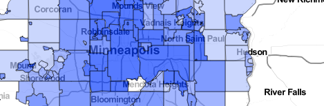
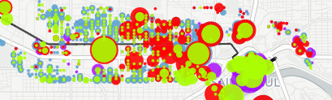

TYLER
HEGWOOD
Map Collection
Tyler.Hegwood@gmail.com
Interactive map allows user to select and compare two indusrty sectors over 13 years
Featuring greater user interactivity, this map utilizes a Mapbox baselayer, elements from the Leaflet Javascript library as well as a dynamic trend line illustration, drawn using the D3.js library. Users select two industries and compare growth trends between them over a span of 13 years across 381 metropolitan locales. Hover over markers to display the percentage make-up of total GDP for a specific industry.

Metropolitan Council's local area economic projections to the year 2040, visualized by interactive chloropleth.
Another Leaflet.js structured map utilizing .json to provide data and boundary layers, and D3.js to illustrate different quanititative elements via dynamic bar chart. This map contains depth across multiple sets of economic data and also spans laterally through time by use of the UI slider. A dynamic dashboard in the upper left displays density numbers per square mile, while the bar chart updates with raw numbers upon mouse hover over.
Interactive map allows user to select vacant housing data set and explore trends relative to varying parameters
A Leaflet Javascript comprised infrastructure allows for greater user interaction, allowing the user to control the display of various data sets. The data available for user selection takes a look at six different perspectives on vacant housing units across Kentucky counties. The CSV data for this map was sourced from the 2010 U.S. Census.

A colorful representation of who occupies what space adjacent to the light rail transit system in the Twin-Cities.
Carto's 'Create Vis' capability, brings to life a comparison of household make-up across the length of the LRT installation. A drop down in the upper right allows users to toggle demographic layers for categorical comparision. Marker size represents density levels of similar household make-ups. Data is sourced from the 2010 US Census, and displayed as the Census Block level.

Interactive map allows user to click to filter power plants by 500km radius visualizing output by relative circle marker radius.
A Leaflet Javascript comprised infrastructure produces web interactivity that is functional, efficient and just plain neat! This map allows the user to select a geographic region and discover what sources of power are within 500km. Getting deeper into locational technicality, once the 500km radius is established, click a marker to learn the exact distance from the desired click point. The markers are sized relative to each plant's power output in megawatts. With just a glance it is easy to see where the greatest output of power comes from in the U.S. The GeoJson data for this map was sourced from the U.S. Energy Information Administration (eia.gov).

Animated Heatmap allows user to view building accumulation geographically over 11 year period.
A simple animated heatmap displays building corridors and groupings throughout Hennepin county using Carto.js Heatmap functionality
This is a basic example of combining geographic location data with catagorical data.
QGIS is a powerful tool granting data visualization to the masses. The simplicity affords a clear visual representation.
For when politcal boundaries just don't cut it.
Qgis is capable of re-defining geographic 'bins' to more objectively visualize density groupings that may be formally bound by politics. In this particular example the hexagon is being used to demonstrate the density of breweries across North America!
Using a historic illustration painstakingly produced by Erwin Raisz merges the cartographic beauty of hand drawn maps with the geographic accuracy of today.
A static map produced using Qgis blends shapefiles projected as North America Albers Equal Area Conic (EPSG:102008) with an accurately geo-referenced basemap of a portion of the famed Pacific Crest Trail. For more information on Erwin Raisz visit his biographical website.
An extension of the traditional static chloropleth with interactive elements made capable with Carto
With County level geographic and statistical popups a new dimension is available using Carto. Zoom in and click on a specific county to learn the name and normalized statistic. Data for this map was acquired from the National Cancer Institute's State Cancer Profiles website.

An animated demonstration of single family home sales sold at Sherriff's Sale auctions within Hennepin County, Minnesota
Utilizing Carto's 'Torque' animation capabilities we are able to view accumulation of sherrif's sales in geographic locations. The Torque map allows for class property characteristics based on accumulation of pixels in a geographic space. This functionality is a new and interesting way to show geographic stacking trends.
An animated demonstration of single family home sales sold as distressed properties within the Twin Cities of Minneapolis and St. Paul
Utilizing Carto's animation capabilities we are able to view accumulation of sales in geographic locations as well as take note of financing type. Paying attention to the financing used to purchase these distressed homes can elude to where owner occupied owners will settle and stabilize with vested interests in the community or investors may be focusing on harvesting rental pool.